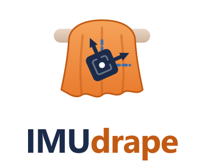
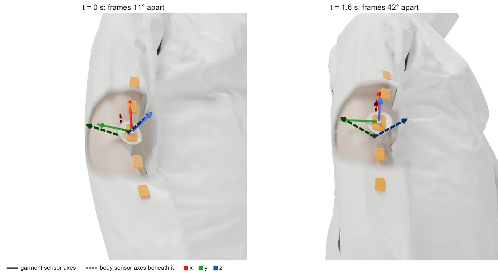
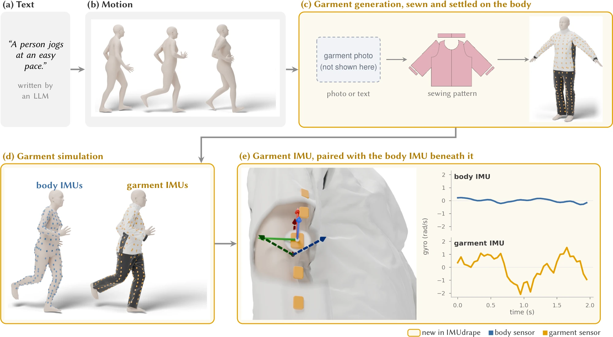
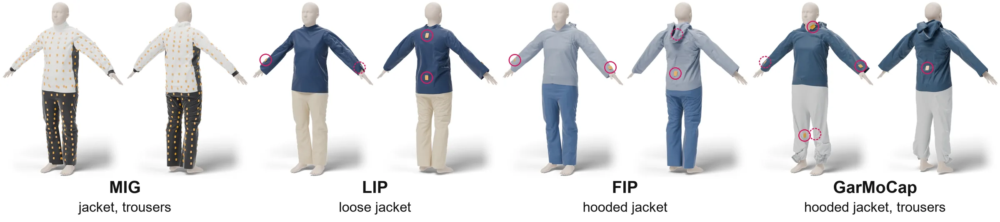
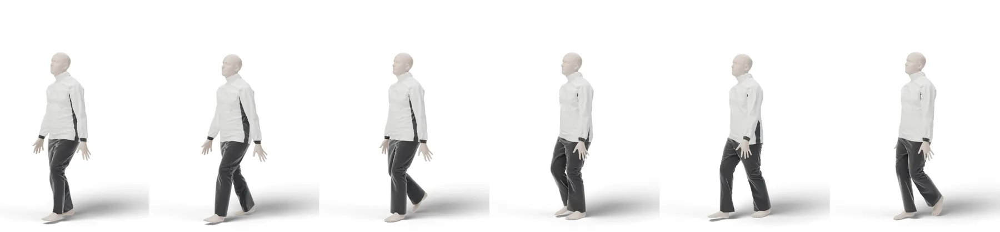
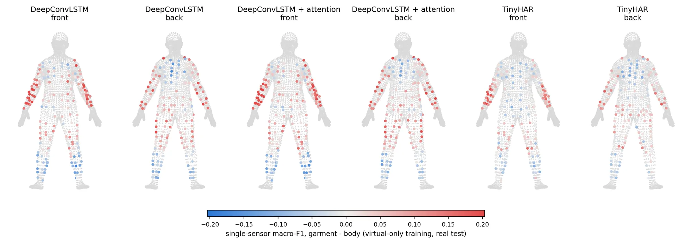

Sensors sewn into clothing do not move rigidly with the body. Loose fabric slides, twists and swings, so a garment-mounted IMU records the fabric as well as the person. IMUdrape generates training data for such sensors from text, by simulating the garment on generated motion and reading virtual IMUs off the fabric.
A 2D sketch, not IMUdrape output and not real data: the forearm part of the sleeve is two masses on springs that are pulled toward the arm, sag under gravity and rattle within the slack around it. It shows the effect the paper models with full 3D cloth simulation. Make the sleeve tight and the two sensors agree.
Inertial sensors are moving into clothing, from sensorized sportswear to jackets with hundreds of IMUs. Sewn into a garment, a sensor is comfortable enough for everyday wear, but it no longer moves rigidly with the body. Its signal now depends on the cut, the fabric, the sensor position and the activity.
Training data are already scarce for sensor-based activity recognition, and a new garment may need new recordings. Virtual IMU data from video or text have eased this for body-worn sensors, but existing generators attach their virtual sensors rigidly to the body, so they cannot reproduce how clothing moves.

IMUdrape starts from language, like IMUGPT. Everything after the body motion is new: the garment is generated to match the deployment, simulated physically on the moving body, and read out at the real sensor positions. Every simulation yields paired body and garment signals for the same motion. The pipeline runs without manual intervention.

For each evaluation dataset, IMUdrape rebuilds the garment its participants wore and places virtual sensors at the dataset's real sensor positions, from 4 boards on a loose jacket to all 396 on the MIG sensor suit.


Frames of generated activities with the physics-simulated MIG jacket and trousers. Seated activities are simulated with a chair and table.
We train on virtual data alone, or on virtual data plus real data from 1, 2 or all training subjects, and test on held-out real subjects. IMUdrape provides three sources: the body signal, the garment signal, and clips drawn from either. Baselines are real data alone, body-mounted virtual data from IMUGPT, and garment data from TailorNet, a learned garment model without dynamics.
Mean ± SD over 3 seeds, each averaged over the test subjects and three recognition models (DeepConvLSTM, DeepConvLSTM with attention, TinyHAR). The dashed line is real data alone. A ring marks the best source in each panel. MIG uses its six loose-fitting sensors.
Mean angular error over 15 major joints, or mean joint position error, averaged over two pose networks (an LSTM poser and TransPose). Mean ± SD over 3 seeds.
The gap between garment and body-mounted data is widest when real data are scarce and narrows once all real subjects are used. MIG tight uses six sensors where the fabric is pressed against the body.
MIG, no real training data, mean over the three recognition models and over the sensor subsets of each size. Labels give the relative improvement of garment over body data.
GarMoCap. The matched garment is simulated on the dataset's recorded training motion, or on the same amount of generated motion. The test subject's motion is never simulated.
IMUdrape Garment data on GarMoCap's recorded motion, from the matched GarMoCap garment or the MIG jacket and trousers.

With one real subject, IMUdrape Body + Garment data raise recognition macro-F1 by a relative 7.2% to 46.3% over real data alone across the four datasets. With all real subjects, the best IMUdrape source is still 1.0% to 5.5% ahead.
See the recognition results ↑On the tight MIG sensor set without real data, garment data beat body data by a relative 20.7% with one sensor and 56.2% with six. Garment data climb from 31.6% to 51.0% macro-F1 as sensors are added, body data only from 26.2% to 32.7%.
See the sensor-count chart ↑Simulating the garment on recorded instead of generated motion lowers GarMoCap pose error without real data by 29.7% to 33.3%. Garment data stay 12.1% more accurate than body data, so the gains from motion and from garment physics add up.
See recorded vs generated ↑Without real data, data from the matched GarMoCap garment reach 32.3% macro-F1 against 28.1% from the generic MIG garment. A garment of the right type still keeps the benefit of garment simulation over body data.
See matched vs generic ↑Garment simulation also pays off where the fabric is pressed against the body. On MIG without real data, garment data improve on body data by a relative 59.5% on the tight sensor set and 15.4% on the loose set. For pose estimation without real data, IMUdrape data give the lowest joint angle error on all three pose datasets, 7.8% to 11.5% below IMUGPT and 3.2% to 10.0% below TailorNet.
Every dataset is evaluated with leave-one-subject-out folds over all of its subjects. Virtual data are simulated on the garment matched to that dataset.
The pipeline code, the matched garments and their sensor maps will be released in the GitHub repository.
github.com/ZikangLeng/IMUdrape@article{leng2026imudrape,
title = {IMUdrape: Generating Garment-Mounted Virtual IMU Data from Text
through Physics-Based Cloth Simulation},
author = {Leng, Zikang and Pl{\"o}tz, Thomas},
journal = {Proc. ACM Interact. Mob. Wearable Ubiquitous Technol.},
year = {2026},
note = {Under review}
}